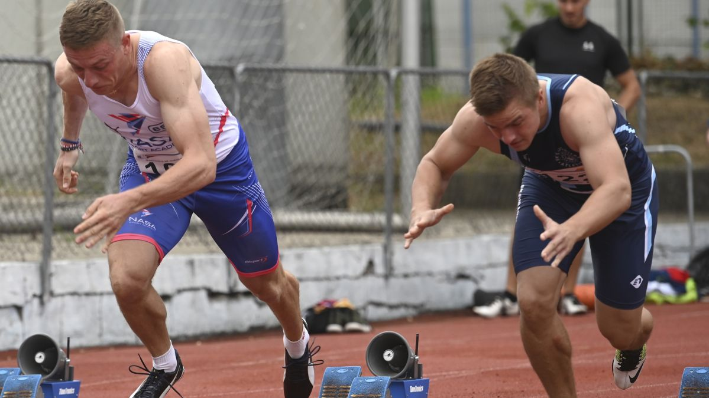

test-bootstrapVelociraptor bol ľahko stavaný mäsožravec, dva metre dlhý vtákovitý dinosaurus z čeľade Dromaeosauridae. Dva metre dlhý Velociraptor mal dlhú nízku lebku, v nej asi 30 ostrých zakrivených zubov, predné končatiny, dlhé zadné končatiny s veľkým otáčavým pazúrom a meravý chvost. V minulosti bol zamieňaný s rodom Deinonychus, čo je dôvod, prečo kreatúry zobrazené vo filme Jurský park, hoci sú označované za Velociraptory, v skutočnosti oveľa viac pripomínajú Deinonycha. Žil pred 80 až 72 miliónmi rokov, nájdený bol v centrálnej Ázii, konkrétne v Mongolsku, Číne a Rusku.
test-bootstrapTento dinosaurus je známy predovšetkým vďaka svojej „role“ dravého zabijaka vo veľkofilme Jurský park z roku 1993 (aj jeho dvoch pokračovaniach). V tomto filme bol Velociraptor vo svojich charakteristikách prezentovaný dosť prehnane (dvakrát väčší ako v skutočnosti, neuveriteľne inteligentný, s nekonečným apetítom). Dôvodom je prostá skutočnosť, že filmový Velociraptor bol vytvorený podľa svojho severoamerického príbuzného, mohutnejšieho rodu Deinonychus (v dobe natáčania filmu panovala medzi niektorými vedcami domnienka, že ide o rovnaký rod). Objavuje sa tiež napríklad v pseudo-dokumentárnom cykle Dinosaur Planet z roku 2003.


